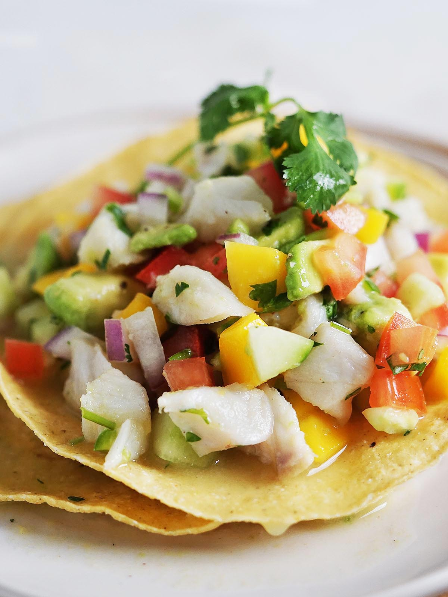

Ceviche

Avocado Shrimp Ceviche-Estillo Sarita
A tried and true ceviche recipe to be enjoyed for a Sunday brunch in our cafe. It is believed by most Latinos that the best time to eat ceviche is on a sunny day. Rainy days cause stomach cramps and nightmares. Of course most Latinos can make a good ceviche blindfolded on any day rain or shine, in my opinion. Excellent for an appetizer in smaller portions or as a meal itself. Personally I enjoy this with an ice cold beer on the side.
Ingredients
- 2 pounds large shrimp - peeled, deveined and chopped
- ¾ cup fresh lime juice
- 5 roma (plum) tomatoes, diced
- 1 white onion, chopped
- ½ cup chopped fresh cilantro
- 1 tablespoon Worcestershire sauce
- 1 tablespoon ketchup
- 1 teaspoon hot pepper sauce
- salt and pepper to taste
- 1 avocado - peeled, pitted and diced
- 16 saltine crackers
Steps
- Place the shrimp and lime juice into a large bowl, and stir to coat. Let stand for about 5 minutes, or until shrimp are opaque. The lime juice will cook them. Mix in the tomatoes, onion, and cilantro until coated with lime juice; cover and refrigerate for 1 hour.
- Remove from the refrigerator, and mix in the Worcestershire sauce, ketchup, hot sauce, salt and pepper. We have our own hot sauce recipe, but you can use whatever hot sauce you like, or leave it out and let people add their own when serving.
- Serve in glass tumblers and top with avocado pieces. Set out extra Worcestershire sauce, ketchup, lime wedges and hot sauce for people to individualize their dish. Serve with saltine crackers.
Home